1042A15 SUPPLEMENTARY CNG CYLINDER UNIT - R.R. INCLUDES SUPPORT FRAME DISMANTLE AT BENCH
- Path
- Procedures > 10 ENGINE UNIT > 1042 METHANE GAS CANNISTER AND TUBES > 1042A METHANE GAS CANNISTER AND TUBES FOR RE-CHARGING > 1042A15 SUPPLEMENTARY CNG CYLINDER UNIT - R.R. INCLUDES SUPPORT FRAME DISMANTLE AT BENCH
- Kind
- repair procedure (removal / refitting; the operation number is the code)
- Applies to
- engines: 2.0 16V; all production periods
- Interactive page
- https://sloeber94.github.io/elrnDB-fDct/en/#/244002597
Applies to: engines: 2.0 16V; all production periods
 Removing
Removing
 Refitting
RefittingPosition the vehicle on the lift.
Op. 1042A02 C.N.G. - FUEL SYSTEM SAFETY CHECK
Disconnect the negative battery terminal.
Op. 1042E61 SUPPLEMENTARY CNG CYLINDER UNIT PROTECTION SEAL - R.R.
Disconnect the electrical connections for the solenoid valves, remove the bands and release the wiring.
Op. 1042A52 2-WAY REAR FITTING OF SUPPLEMENTARY CNG CANISTER SYSTEM - R.R.
1. Position the special support tools (1a) and (1b) under the chassis and make sure they are secured to a hydraulic lift (1c).
Description | Code | Function | |
|---|---|---|---|
1a | Frame for removing-refitting additional canisters | 2.000.000.000 | Removing-refitting additional canisters |
Description | Code | Function | |
|---|---|---|---|
1b | Adjustable plate | 1.870.856.000 | Removing-refitting additional canisters |
2. Loosen the rear fixing bolts.
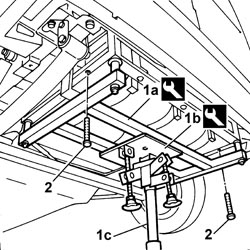
Applies to: engines: 2.0 16V; all production periods
1. Undo the front fixing nuts (1a) and keep the special washers (1b).
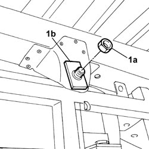
Applies to: engines: 2.0 16V; all production periods
Bend the connecting pipe between the rear canisters and the rear connector inwards.
1. Working on the tool (1a) and the hydraulic lift (1b), retract the frame complete with canisters (1c) and tilt it backwards until it is removed from the vehicle.
Description | Code | Function | |
|---|---|---|---|
1a | Adjustable plate | 1.870.856.000 | Removing-refitting additional canisters |
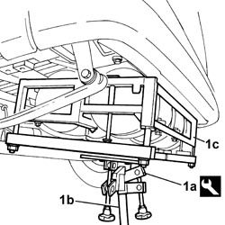
Applies to: engines: 2.0 16V; all production periods
1. Undo the connector on the solenoid valve.
2. Remove the connecting pipe between the additional canister and the rear connector.
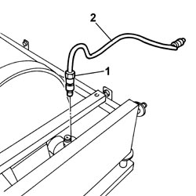
Applies to: engines: 2.0 16V; all production periods
1. Undo the retaining bolts.
2. Remove the shield.
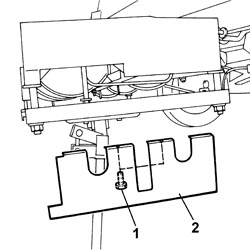
Applies to: engines: 2.0 16V; all production periods
1. Undo the retaining bolts.
2. Remove the shield mounting bracket.
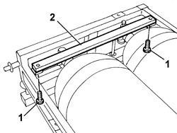
Applies to: engines: 2.0 16V; all production periods
1. Undo the connectors on the solenoid valves.
2. Remove the additional canisters connecting pipe.
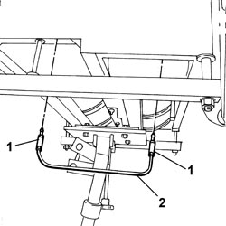
Applies to: engines: 2.0 16V; all production periods
1. Remove the lower nuts fixing belt anchorage rods and the washers.
2. Keep the canister guard mounting brackets.
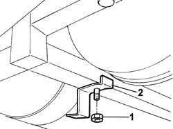
Applies to: engines: 2.0 16V; all production periods
1. Remove the belt anchorage rods.
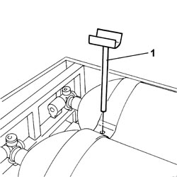
Applies to: engines: 2.0 16V; all production periods
1. Undo the fixing bolts (1a) and keep the canister guard mounting brackets (1b).
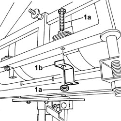
Applies to: engines: 2.0 16V; all production periods
1. Remove the upper belts securing the centre and solenoid valve side canisters.
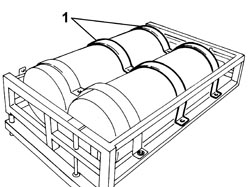
Applies to: engines: 2.0 16V; all production periods
1. Release the upper belt at the side.
2. Using the special tool and suitable cables, secure the canister.
Description | Code | Function | |
|---|---|---|---|
2 | Tool for balancing | 1.871.001.700 | Removing-refitting additional canisters from frame |
3. Using the hydraulic lift, remove the canister from the support frame.
Carry out similar operations to remove the remaining canister.
Remove the remaining upper belt and the lower belts.
Remove the frame from the support tool.
Description | Code | Function | |
|---|---|---|---|
- | Frame for removing-refitting additional canisters | 2.000.000.000 | Removing-refitting additional canisters |
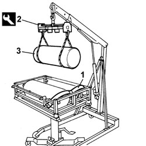
Applies to: engines: 2.0 16V; all production periods
Refitting
RemovingPosition the canister support frame on the tools secured to the hydraulic lift.
Description | Code | Function | |
|---|---|---|---|
- | Frame for removing-refitting additional canisters | 2.000.000.000 | Removing-refitting additional canisters |
Description | Code | Function | |
|---|---|---|---|
- | Adjustable plate | 1.870.856.000 | Removing-refitting additional canisters |
Position the lower fixing belts.
Position the upper belt on the support frame to allow the positioning of the canisters.
Using the special tool and suitable cables, secure the canister.
Description | Code | Function | |
|---|---|---|---|
2 | Tool for balancing | 1.871.001.700 | Removing-refitting additional canisters from frame |
Using the hydraulic lift, position the canister on the support frame.
Carry out similar operations to position the remaining canister.
Position the additional canisters connecting pipe and tighten the connectors on the solenoid valves to the recommended torque.
Value daNm | Fastening | Component | Ø | |
|---|---|---|---|---|
- | 2.8 | Connector | - | - |
Position the remaining fixing belts.
Fit the canister guard mounting brackets making sure they are in the position marked on their removal and tighten the fixing bolts.
Fit the belt anchorage rods.
Fit the canister guard mounting brackets making sure they are in the position marked on their removal and tighten the nuts with washers.
Position the guard mounting bracket and tighten the fixing bolts.
Position the guard and tighten the fixing bolts.
Position the connecting pipe between the additional canister and the rear connector and tighten the connector on the solenoid valve to the recommended torque.
Value daNm | Fastening | Component | Ø | |
|---|---|---|---|---|
- | 2.8 | Connector | - | - |
Working on the support ool and the hydraulic lift, place the frame complete with canisters in position on the vehicle taking care not to damage the connecting pipe between the canisters and the rear connector.
Description | Code | Function | |
|---|---|---|---|
- | Frame for removing-refitting additional canisters | 2.000.000.000 | Removing-refitting additional canisters |
Description | Code | Function | |
|---|---|---|---|
- | Adjustable plate | 1.870.856.000 | Removing-refitting additional canisters |
Position the washers and tighten the front retaining nuts.
Tighten the rear fixing bolts.
Remove the hydraulic lift and the support tools.
Description | Code | Function | |
|---|---|---|---|
- | Frame for removing-refitting additional canisters | 2.000.000.000 | Removing-refitting additional canisters |
Description | Code | Function | |
|---|---|---|---|
- | Adjustable plate | 1.870.856.000 | Removing-refitting additional canisters |
Op. 1042A52 2-WAY REAR FITTING OF SUPPLEMENTARY CNG CANISTER SYSTEM - R.R.
Position the wiring and secure it using suitable bands, then connect the solenoid valve electrical connections.
Op. 1042E61 SUPPLEMENTARY CNG CYLINDER UNIT PROTECTION SEAL - R.R.
Connect the negative battery terminal.
Op. 1042A02 C.N.G. - FUEL SYSTEM SAFETY CHECK
Remove the vehicle from the lift.